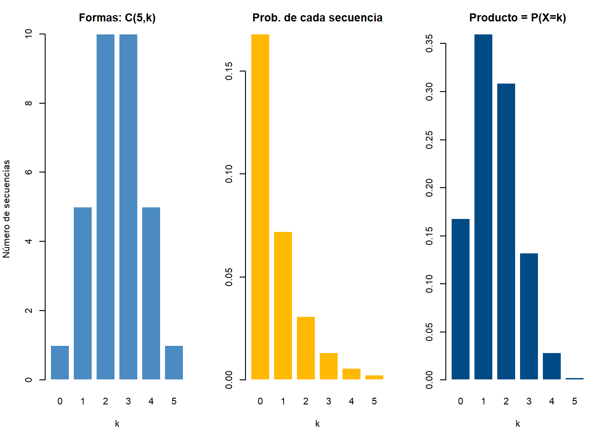

Code
# Todas las secuencias posibles de 5 lanzamientos (C = cara, S = sello)
lanzamientos <- expand.grid(rep(list(c("C","S")), 5))
nrow(lanzamientos) # ¿cuántas secuencias hay en total?[1] 32La fórmula de la binomial es \(P(X=k)=\binom{n}{k}p^k(1-p)^{n-k}\). La parte \(p^k(1-p)^{n-k}\) se entiende rápido: es la probabilidad de una secuencia concreta de éxitos y fracasos. Pero, ¿y ese \(\binom{n}{k}\) del principio? No es un adorno ni una constante de ajuste: es un conteo, y en este tema vas a descubrir exactamente qué está contando.
Antes de seguir, responde de memoria: si lanzas 5 monedas, ¿de cuántas formas distintas pueden salir exactamente 2 caras? Escribe tu número antes de continuar. (No vale calcular: adivina.)
En vez de aceptar una fórmula, vamos a enumerar todas las posibilidades y contarlas. Con 5 monedas hay \(2^5\) secuencias posibles:
[1] 32Ahora contamos cuántas caras tiene cada secuencia y vemos cuántas tienen exactamente 2:
Compara la tabla con el número que predijiste. ¿Le acertaste? Fíjate además en la forma del conteo: 1, 5, 10, 10, 5, 1. ¿Notas algo simétrico?
Veamos cuáles son esas 10 secuencias con exactamente 2 caras:
8 12 14 15 20 22 23 26 27 29
"SSSCC" "SSCSC" "SCSSC" "CSSSC" "SSCCS" "SCSCS" "CSSCS" "SCCSS" "CSCSS" "CCSSS" Las 10 secuencias son distintas entre sí, pero todas tienen exactamente 2 caras y 3 sellos. Lo único que cambia es en qué posiciones caen las caras. Ese es justamente el problema que resuelve la combinatoria: contar de cuántas maneras se pueden elegir 2 posiciones entre 5.
Es la regla básica de la que sale todo lo demás:
Si una tarea se hace en etapas, y la etapa 1 tiene \(n_1\) maneras, la etapa 2 tiene \(n_2\) maneras, …, la etapa \(r\) tiene \(n_r\) maneras, entonces la tarea completa tiene \(n_1 \times n_2 \times \cdots \times n_r\) maneras.
Ejemplo. Una placa de vehículo con formato ABC-123 (3 letras del alfabeto de 26 y 3 dígitos):
\[26 \times 26 \times 26 \times 10 \times 10 \times 10 = 26^3 \cdot 10^3 = 17{,}576{,}000\]
Ejemplo con monedas. Cada lanzamiento tiene 2 resultados, y hay 5 lanzamientos: \(2^5=32\) secuencias. Es el número que obtuviste con nrow() arriba.
Una permutación es una selección ordenada de \(k\) objetos entre \(n\) disponibles, sin repetir:
\[P(n,k) = \frac{n!}{(n-k)!} = n(n-1)(n-2)\cdots(n-k+1)\]
La lógica es el principio multiplicativo: para el primer puesto hay \(n\) opciones, para el segundo quedan \(n-1\), para el tercero \(n-2\), y así \(k\) veces.
Ejemplo. En una carrera de 8 corredores, ¿de cuántas formas se puede formar el podio (oro, plata, bronce)?
\[P(8,3)=\frac{8!}{5!}=8\times7\times6=336\]
Aquí el orden importa: que gane Ana-Beto-Carla no es lo mismo que Carla-Beto-Ana.
Una combinación es una selección de \(k\) objetos entre \(n\), sin importar el orden:
\[\binom{n}{k} = \frac{n!}{k!\,(n-k)!}\]
Se lee “\(n\) en \(k\)” o “combinaciones de \(n\) tomadas de a \(k\)”.
¿De dónde sale el \(k!\) del denominador? De corregir el sobreconteo. Las permutaciones cuentan cada grupo de \(k\) elementos \(k!\) veces (una por cada orden posible de esos mismos \(k\) elementos). Al dividir entre \(k!\), cada grupo se cuenta una sola vez:
\[\binom{n}{k} = \frac{P(n,k)}{k!}\]
Ejemplo. De los mismos 8 corredores, ¿de cuántas formas se elige un comité de 3 (sin cargos)?
\[\binom{8}{3}=\frac{8!}{3!\,5!}=\frac{336}{6}=56\]
La pregunta que decide todo es: ¿cambia el resultado si reordeno lo que elegí?
| El orden importa | El orden no importa | |
|---|---|---|
| Nombre | Permutación | Combinación |
| Fórmula | \(\dfrac{n!}{(n-k)!}\) | \(\dfrac{n!}{k!(n-k)!}\) |
| En R | factorial(n)/factorial(n-k) |
choose(n, k) |
| Ejemplos | Podio, contraseña, orden de turnos | Comité, baloto, manos de cartas |
| Con \(n=8,k=3\) | 336 | 56 |
Siempre se cumple \(P(n,k) \ge \binom{n}{k}\): hay más formas ordenadas que sin ordenar, exactamente \(k!\) veces más.
Ya tenemos todo lo necesario. Volvamos a las 5 monedas y preguntemos: ¿cuál es la probabilidad de obtener exactamente 2 caras?
Paso 1 — ¿Cuánto vale UNA secuencia concreta?
Tomemos CCSSS (cara, cara, sello, sello, sello). Como los lanzamientos son independientes, su probabilidad es el producto:
\[P(\text{CCSSS}) = p \cdot p \cdot (1-p) \cdot (1-p) \cdot (1-p) = p^2(1-p)^3\]
Paso 2 — ¿Cambia si la secuencia es otra?
Tomemos ahora SCSCS, que también tiene 2 caras:
\[P(\text{SCSCS}) = (1-p)\cdot p \cdot (1-p) \cdot p \cdot (1-p) = p^2(1-p)^3\]
Es exactamente la misma. Y esto vale para cualquier secuencia con 2 caras y 3 sellos: lo único que cambia es el orden de los factores, y el producto no depende del orden. En general, toda secuencia con \(k\) éxitos en \(n\) ensayos tiene probabilidad \(p^k(1-p)^{n-k}\).
Paso 3 — ¿Cuántas secuencias hay?
Elegir en qué 2 de las 5 posiciones van las caras es exactamente una combinación: el orden en que elijo las posiciones no importa (elegir “posiciones 1 y 2” es lo mismo que “posiciones 2 y 1”). Por tanto hay \(\binom{5}{2}=10\) secuencias — el número que ya contaste enumerando.
Paso 4 — Juntar las dos piezas
Como las 10 secuencias son mutuamente excluyentes (o sale una, o sale otra) y todas tienen la misma probabilidad, se suman:
\[P(X=2) = \underbrace{\binom{5}{2}}_{\text{cuántas secuencias}} \times \underbrace{p^2(1-p)^3}_{\text{cuánto vale cada una}}\]
Y generalizando a \(n\) ensayos y \(k\) éxitos:
\[\boxed{P(X=k) = \binom{n}{k}\,p^k(1-p)^{n-k}}\]
La fórmula binomial no es más que (número de formas) × (probabilidad de cada forma). El \(\binom{n}{k}\) cuenta las secuencias; el \(p^k(1-p)^{n-k}\) es lo que vale cada una.
Comprobémoslo con las monedas (\(p=0.5\)):
[1] 0.3125[1] 0.3125Los dos números coinciden. dbinom() no hace magia: multiplica exactamente esas dos piezas. Y fíjate que \(10/32 = 0.3125\) — es la fracción de las 32 secuencias totales que tienen 2 caras, tal como sale de la tabla que construiste al inicio.
Con una moneda justa, contar secuencias basta (10 de 32). Pero cuando el éxito y el fracaso no son igual de probables, cada secuencia sigue valiendo lo mismo entre sí, pero ya no vale lo mismo que las de otro \(k\). Veamos \(n=5\), \(p=0.3\):
k Formas Prob_por_forma Probabilidad
1 0 1 0.16807 0.16807
2 1 5 0.07203 0.36015
3 2 10 0.03087 0.30870
4 3 10 0.01323 0.13230
5 4 5 0.00567 0.02835
6 5 1 0.00243 0.00243[1] 1Mira las dos columnas del medio. Formas es simétrica (1, 5, 10, 10, 5, 1), pero Prob_por_forma decrece al aumentar \(k\): con \(p=0.3\), cada cara adicional hace la secuencia menos probable. El resultado del producto ya no es simétrico y el máximo cae en \(k=1\), no en el centro. Con \(p=0.5\) las dos columnas sí producirían una distribución simétrica.
par(mfrow = c(1, 3), mar = c(4, 4, 3, 1))
barplot(tabla_binomial$Formas, names.arg = k, col = "#4B8BC2", border = "white",
main = "Formas: C(5,k)", xlab = "k", ylab = "Número de secuencias")
barplot(tabla_binomial$Prob_por_forma, names.arg = k, col = "#FFB903", border = "white",
main = "Prob. de cada secuencia", xlab = "k", ylab = "")
barplot(tabla_binomial$Probabilidad, names.arg = k, col = "#004B85", border = "white",
main = "Producto = P(X=k)", xlab = "k", ylab = "")
par(mfrow = c(1, 1))
Simetría: \(\binom{n}{k}=\binom{n}{n-k}\)
Tiene sentido: elegir cuáles 2 posiciones llevan cara es lo mismo que elegir cuáles 3 llevan sello.
Triángulo de Pascal: cada número es la suma de los dos que tiene encima.
n = 0 : 1
n = 1 : 1 1
n = 2 : 1 2 1
n = 3 : 1 3 3 1
n = 4 : 1 4 6 4 1
n = 5 : 1 5 10 10 5 1
n = 6 : 1 6 15 20 15 6 1 Si te piden \(\binom{45}{6}\) (las combinaciones del Baloto), no intentes calcular \(45!\) a mano ni en la calculadora: es un número de 57 cifras y se desborda. Usa choose(45, 6), que R calcula sin construir los factoriales completos. La fórmula con factoriales sirve para entender de dónde sale el resultado, no para computarlo. Ver más trucos →
Enumerar y contar. Repite la exploración del inicio pero con 6 monedas: construye todas las secuencias con expand.grid(), cuenta cuántas tienen exactamente 3 caras, y verifica que coincida con choose(6, 3). ¿Cuántas secuencias hay en total?
Permutación o combinación. Para cada situación, decide cuál corresponde y calcula el resultado en R:
Armar la fórmula a mano. Un examen tiene 8 preguntas de verdadero/falso y un estudiante responde al azar (\(p=0.5\)). Calcule \(P(X=5)\) de dos formas: (i) con choose() y las potencias, escribiendo las dos piezas por separado; (ii) con dbinom(). Verifique que coinciden.
Control de calidad (reto). Una caja tiene 12 piezas, de las cuales 3 son defectuosas. Se extraen 4 piezas sin reemplazo. Use combinaciones para calcular la probabilidad de que exactamente 1 sea defectuosa: cuente las formas favorables como \(\binom{3}{1}\binom{9}{3}\) y divídalas entre el total \(\binom{12}{4}\). ¿Por qué no se puede usar aquí la fórmula binomial?
choose(10, 4) — devuelve 210. Es una combinación porque en un comité sin cargos el orden de selección no cambia quiénes lo integran.
0.6, que es \(1-p\). El resultado es \(15 \times 0.16 \times 0.1296 = 0.31104\), idéntico a dbinom(2, 6, 0.4).
factorial(n)/factorial(n-k).choose(n, k). Es la permutación dividida entre \(k!\), para corregir el sobreconteo.Con la fórmula ya entendida —no memorizada—, el Tema P6 trabaja la distribución binomial completa: su media, su varianza, y su relación con la Poisson.
---
title: "Tema P6a · Conteo: de las permutaciones a la fórmula binomial"
---
::: {.hero-motivacion}
## 🎲 ¿De dónde sale ese número raro en la fórmula?
La fórmula de la binomial es $P(X=k)=\binom{n}{k}p^k(1-p)^{n-k}$. La parte $p^k(1-p)^{n-k}$ se entiende rápido: es la probabilidad de una secuencia concreta de éxitos y fracasos. Pero, ¿y ese $\binom{n}{k}$ del principio? No es un adorno ni una constante de ajuste: es **un conteo**, y en este tema vas a descubrir exactamente qué está contando.
:::
::: {.ficha-prediccion}
Antes de seguir, responde de memoria: si lanzas 5 monedas, ¿de cuántas formas distintas pueden salir **exactamente 2 caras**? Escribe tu número antes de continuar. (No vale calcular: adivina.)
:::
## 🔬 Exploremos: contemos a mano
En vez de aceptar una fórmula, vamos a **enumerar todas las posibilidades** y contarlas. Con 5 monedas hay $2^5$ secuencias posibles:
```{r}
# Todas las secuencias posibles de 5 lanzamientos (C = cara, S = sello)
lanzamientos <- expand.grid(rep(list(c("C","S")), 5))
nrow(lanzamientos) # ¿cuántas secuencias hay en total?
```
Ahora contamos cuántas caras tiene cada secuencia y vemos cuántas tienen exactamente 2:
```{r}
num_caras <- rowSums(lanzamientos == "C")
table(num_caras)
```
::: {.ficha-resultado}
Compara la tabla con el número que predijiste. ¿Le acertaste? Fíjate además en la forma del conteo: **1, 5, 10, 10, 5, 1**. ¿Notas algo simétrico?
:::
Veamos cuáles son esas 10 secuencias con exactamente 2 caras:
```{r}
secuencias_2caras <- lanzamientos[num_caras == 2, ]
apply(secuencias_2caras, 1, paste, collapse = "")
```
::: {.callout-note}
## Lo que deberías notar
Las 10 secuencias son distintas entre sí, pero **todas tienen exactamente 2 caras y 3 sellos**. Lo único que cambia es *en qué posiciones* caen las caras. Ese es justamente el problema que resuelve la combinatoria: contar de cuántas maneras se pueden elegir 2 posiciones entre 5.
:::
## 📖 Ahora sí, la teoría
::: {.panel-tabset}
## 1. Principio multiplicativo
Es la regla básica de la que sale todo lo demás:
> Si una tarea se hace en etapas, y la etapa 1 tiene $n_1$ maneras, la etapa 2 tiene $n_2$ maneras, ..., la etapa $r$ tiene $n_r$ maneras, entonces la tarea completa tiene $n_1 \times n_2 \times \cdots \times n_r$ maneras.
**Ejemplo.** Una placa de vehículo con formato ABC-123 (3 letras del alfabeto de 26 y 3 dígitos):
$$26 \times 26 \times 26 \times 10 \times 10 \times 10 = 26^3 \cdot 10^3 = 17{,}576{,}000$$
```{r}
26^3 * 10^3
```
**Ejemplo con monedas.** Cada lanzamiento tiene 2 resultados, y hay 5 lanzamientos: $2^5=32$ secuencias. Es el número que obtuviste con `nrow()` arriba.
## 2. Permutaciones (el orden SÍ importa)
Una **permutación** es una selección ordenada de $k$ objetos entre $n$ disponibles, **sin repetir**:
$$P(n,k) = \frac{n!}{(n-k)!} = n(n-1)(n-2)\cdots(n-k+1)$$
La lógica es el principio multiplicativo: para el primer puesto hay $n$ opciones, para el segundo quedan $n-1$, para el tercero $n-2$, y así $k$ veces.
**Ejemplo.** En una carrera de 8 corredores, ¿de cuántas formas se puede formar el podio (oro, plata, bronce)?
$$P(8,3)=\frac{8!}{5!}=8\times7\times6=336$$
```{r}
factorial(8) / factorial(8 - 3)
```
Aquí el orden importa: que gane Ana-Beto-Carla **no es lo mismo** que Carla-Beto-Ana.
## 3. Combinaciones (el orden NO importa)
Una **combinación** es una selección de $k$ objetos entre $n$, **sin importar el orden**:
$$\binom{n}{k} = \frac{n!}{k!\,(n-k)!}$$
Se lee "$n$ en $k$" o "combinaciones de $n$ tomadas de a $k$".
**¿De dónde sale el $k!$ del denominador?** De corregir el sobreconteo. Las permutaciones cuentan cada grupo de $k$ elementos **$k!$ veces** (una por cada orden posible de esos mismos $k$ elementos). Al dividir entre $k!$, cada grupo se cuenta una sola vez:
$$\binom{n}{k} = \frac{P(n,k)}{k!}$$
**Ejemplo.** De los mismos 8 corredores, ¿de cuántas formas se elige un comité de 3 (sin cargos)?
$$\binom{8}{3}=\frac{8!}{3!\,5!}=\frac{336}{6}=56$$
```{r}
choose(8, 3)
factorial(8) / (factorial(3) * factorial(8 - 3)) # la misma fórmula, a mano
336 / factorial(3) # P(8,3) dividido entre 3!
```
## 4. ¿Cuál uso?
La pregunta que decide todo es: **¿cambia el resultado si reordeno lo que elegí?**
| | El orden importa | El orden no importa |
|---|---|---|
| **Nombre** | Permutación | Combinación |
| **Fórmula** | $\dfrac{n!}{(n-k)!}$ | $\dfrac{n!}{k!(n-k)!}$ |
| **En R** | `factorial(n)/factorial(n-k)` | `choose(n, k)` |
| **Ejemplos** | Podio, contraseña, orden de turnos | Comité, baloto, manos de cartas |
| **Con $n=8,k=3$** | 336 | 56 |
Siempre se cumple $P(n,k) \ge \binom{n}{k}$: hay más formas ordenadas que sin ordenar, exactamente $k!$ veces más.
:::
## 🔑 El puente: de contar a la fórmula binomial
Ya tenemos todo lo necesario. Volvamos a las 5 monedas y preguntemos: ¿cuál es la probabilidad de obtener **exactamente 2 caras**?
**Paso 1 — ¿Cuánto vale UNA secuencia concreta?**
Tomemos `CCSSS` (cara, cara, sello, sello, sello). Como los lanzamientos son independientes, su probabilidad es el producto:
$$P(\text{CCSSS}) = p \cdot p \cdot (1-p) \cdot (1-p) \cdot (1-p) = p^2(1-p)^3$$
**Paso 2 — ¿Cambia si la secuencia es otra?**
Tomemos ahora `SCSCS`, que también tiene 2 caras:
$$P(\text{SCSCS}) = (1-p)\cdot p \cdot (1-p) \cdot p \cdot (1-p) = p^2(1-p)^3$$
**Es exactamente la misma.** Y esto vale para cualquier secuencia con 2 caras y 3 sellos: lo único que cambia es el orden de los factores, y el producto no depende del orden. En general, toda secuencia con $k$ éxitos en $n$ ensayos tiene probabilidad $p^k(1-p)^{n-k}$.
**Paso 3 — ¿Cuántas secuencias hay?**
Elegir *en qué 2 de las 5 posiciones* van las caras es exactamente una **combinación**: el orden en que elijo las posiciones no importa (elegir "posiciones 1 y 2" es lo mismo que "posiciones 2 y 1"). Por tanto hay $\binom{5}{2}=10$ secuencias — el número que ya contaste enumerando.
**Paso 4 — Juntar las dos piezas**
Como las 10 secuencias son mutuamente excluyentes (o sale una, o sale otra) y todas tienen la misma probabilidad, se suman:
$$P(X=2) = \underbrace{\binom{5}{2}}_{\text{cuántas secuencias}} \times \underbrace{p^2(1-p)^3}_{\text{cuánto vale cada una}}$$
Y generalizando a $n$ ensayos y $k$ éxitos:
$$\boxed{P(X=k) = \binom{n}{k}\,p^k(1-p)^{n-k}}$$
::: {.ficha-resultado}
La fórmula binomial no es más que **(número de formas) × (probabilidad de cada forma)**. El $\binom{n}{k}$ cuenta las secuencias; el $p^k(1-p)^{n-k}$ es lo que vale cada una.
:::
Comprobémoslo con las monedas ($p=0.5$):
```{r}
n <- 5; k <- 2; p <- 0.5
formas <- choose(n, k) # cuántas secuencias tienen 2 caras
prob_una <- p^k * (1-p)^(n-k) # cuánto vale cada una
formas * prob_una # la fórmula, armada a mano
dbinom(k, size = n, prob = p) # la función de R
```
::: {.callout-note}
## Lo que deberías notar
Los dos números coinciden. `dbinom()` no hace magia: multiplica exactamente esas dos piezas. Y fíjate que $10/32 = 0.3125$ — es la fracción de las 32 secuencias totales que tienen 2 caras, tal como sale de la tabla que construiste al inicio.
:::
## 🧪 Ejemplo con datos reales: cuando $p \neq 0.5$
Con una moneda justa, contar secuencias basta (10 de 32). Pero cuando el éxito y el fracaso **no** son igual de probables, cada secuencia sigue valiendo lo mismo *entre sí*, pero ya no vale lo mismo que las de otro $k$. Veamos $n=5$, $p=0.3$:
```{r}
n <- 5; p <- 0.3
k <- 0:5
tabla_binomial <- data.frame(
k = k,
Formas = choose(n, k),
Prob_por_forma = round(p^k * (1-p)^(n-k), 6),
Probabilidad = round(choose(n, k) * p^k * (1-p)^(n-k), 6)
)
tabla_binomial
sum(tabla_binomial$Probabilidad) # debe dar 1
```
::: {.ficha-resultado}
Mira las dos columnas del medio. `Formas` es simétrica (1, 5, 10, 10, 5, 1), pero `Prob_por_forma` **decrece** al aumentar $k$: con $p=0.3$, cada cara adicional hace la secuencia menos probable. El resultado del producto ya no es simétrico y el máximo cae en $k=1$, no en el centro. Con $p=0.5$ las dos columnas sí producirían una distribución simétrica.
:::
```{r}
#| label: fig-binomial-conteo
#| fig-cap: "Las dos piezas de la fórmula binomial y su producto"
par(mfrow = c(1, 3), mar = c(4, 4, 3, 1))
barplot(tabla_binomial$Formas, names.arg = k, col = "#4B8BC2", border = "white",
main = "Formas: C(5,k)", xlab = "k", ylab = "Número de secuencias")
barplot(tabla_binomial$Prob_por_forma, names.arg = k, col = "#FFB903", border = "white",
main = "Prob. de cada secuencia", xlab = "k", ylab = "")
barplot(tabla_binomial$Probabilidad, names.arg = k, col = "#004B85", border = "white",
main = "Producto = P(X=k)", xlab = "k", ylab = "")
par(mfrow = c(1, 1))
```
## 🎯 Dos propiedades útiles del número combinatorio
**Simetría:** $\binom{n}{k}=\binom{n}{n-k}$
```{r}
choose(5, 2)
choose(5, 3)
```
Tiene sentido: elegir cuáles 2 posiciones llevan cara es lo mismo que elegir cuáles 3 llevan sello.
**Triángulo de Pascal:** cada número es la suma de los dos que tiene encima.
```{r}
for (n in 0:6) cat("n =", n, ":", choose(n, 0:n), "\n")
```
::: {.callout-tip}
## 💡 Truco de interpretación
Si te piden $\binom{45}{6}$ (las combinaciones del Baloto), **no** intentes calcular $45!$ a mano ni en la calculadora: es un número de 57 cifras y se desborda. Usa `choose(45, 6)`, que R calcula sin construir los factoriales completos. La fórmula con factoriales sirve para *entender* de dónde sale el resultado, no para computarlo. [Ver más trucos →](../recursos.qmd)
:::
```{r}
choose(45, 6) # combinaciones posibles en el Baloto
format(1 / choose(45, 6), scientific = TRUE) # probabilidad de acertar con un tiquete
```
## 🧑🔬 Laboratorio
1. **Enumerar y contar.** Repite la exploración del inicio pero con **6 monedas**: construye todas las secuencias con `expand.grid()`, cuenta cuántas tienen exactamente 3 caras, y verifica que coincida con `choose(6, 3)`. ¿Cuántas secuencias hay en total?
2. **Permutación o combinación.** Para cada situación, decide cuál corresponde y calcula el resultado en R:
- De 10 estudiantes se eligen 3 para representante, suplente y secretario.
- De 10 estudiantes se eligen 3 para formar un grupo de trabajo.
- Una clave de 4 dígitos (los dígitos pueden repetirse).
3. **Armar la fórmula a mano.** Un examen tiene 8 preguntas de verdadero/falso y un estudiante responde al azar ($p=0.5$). Calcule $P(X=5)$ de dos formas: (i) con `choose()` y las potencias, escribiendo las dos piezas por separado; (ii) con `dbinom()`. Verifique que coinciden.
4. **Control de calidad (reto).** Una caja tiene 12 piezas, de las cuales 3 son defectuosas. Se extraen 4 piezas **sin reemplazo**. Use combinaciones para calcular la probabilidad de que exactamente 1 sea defectuosa: cuente las formas favorables como $\binom{3}{1}\binom{9}{3}$ y divídalas entre el total $\binom{12}{4}$. ¿Por qué **no** se puede usar aquí la fórmula binomial?
## ✅ Ejercicios autocorregibles
### Ejercicio 1 — Completa el código
```r
# Número de comités de 4 personas que se pueden formar con 10 candidatos
___(10, 4)
```
<details>
<summary>Ver respuesta</summary>
`choose(10, 4)` — devuelve 210. Es una combinación porque en un comité sin cargos el orden de selección no cambia quiénes lo integran.
</details>
### Ejercicio 2 — Completa el código
```r
# Las dos piezas de la fórmula binomial para n=6, k=2, p=0.4
formas <- choose(6, 2)
prob_una <- 0.4^2 * ___^(6 - 2)
formas * prob_una
```
<details>
<summary>Ver respuesta</summary>
`0.6`, que es $1-p$. El resultado es $15 \times 0.16 \times 0.1296 = 0.31104$, idéntico a `dbinom(2, 6, 0.4)`.
</details>
### Ejercicio 3 — Verdadero o falso
<div class="card-lab" id="quiz-temap6a">
<div style="margin-bottom: 1rem;"><strong>1. En una permutación el orden importa; en una combinación, no.</strong><br>
<label><input type="radio" name="q1" value="V"> Verdadero</label> <label style="margin-left: 1rem;"><input type="radio" name="q1" value="F"> Falso</label></div>
<div style="margin-bottom: 1rem;"><strong>2. Para los mismos n y k, siempre se cumple que P(n,k) es mayor o igual que C(n,k).</strong><br>
<label><input type="radio" name="q2" value="V"> Verdadero</label> <label style="margin-left: 1rem;"><input type="radio" name="q2" value="F"> Falso</label></div>
<div style="margin-bottom: 1rem;"><strong>3. En la fórmula binomial, el número combinatorio cuenta cuántas secuencias distintas tienen exactamente k éxitos.</strong><br>
<label><input type="radio" name="q3" value="V"> Verdadero</label> <label style="margin-left: 1rem;"><input type="radio" name="q3" value="F"> Falso</label></div>
<div style="margin-bottom: 1rem;"><strong>4. Todas las secuencias con k éxitos en n ensayos tienen la misma probabilidad entre sí.</strong><br>
<label><input type="radio" name="q4" value="V"> Verdadero</label> <label style="margin-left: 1rem;"><input type="radio" name="q4" value="F"> Falso</label></div>
<div style="margin-bottom: 1rem;"><strong>5. C(n,k) siempre es igual a C(n, n−k).</strong><br>
<label><input type="radio" name="q5" value="V"> Verdadero</label> <label style="margin-left: 1rem;"><input type="radio" name="q5" value="F"> Falso</label></div>
<button class="btn-outline-prediccion" style="padding: 0.5rem 1rem; border-radius: 4px; cursor: pointer;" onclick="revisarQuizTemaP6a()">Revisar respuestas</button>
<p id="resultado-quiz-temap6a" style="margin-top: 1rem; font-weight: 700;"></p>
</div>
<script>
function revisarQuizTemaP6a() {
const respuestas = { q1: "V", q2: "V", q3: "V", q4: "V", q5: "V" };
const sinResponder = Object.keys(respuestas).filter(
p => !document.querySelector(`input[name="${p}"]:checked`)
);
const resultadoEl = document.getElementById("resultado-quiz-temap6a");
if (sinResponder.length > 0) {
resultadoEl.textContent = "Responde todas las preguntas antes de revisar.";
resultadoEl.style.color = "#B37D00";
return;
}
let correctas = 0;
for (const [p, c] of Object.entries(respuestas)) {
const s = document.querySelector(`input[name="${p}"]:checked`);
if (s && s.value === c) correctas++;
}
resultadoEl.textContent = `Obtuviste ${correctas} de ${Object.keys(respuestas).length} correctas.`;
resultadoEl.style.color = correctas === Object.keys(respuestas).length ? "#004B85" : "#B37D00";
}
</script>
## 🗂️ Resumen
::: {.card-lab}
- El **principio multiplicativo** es la base: si una tarea se hace por etapas, se multiplican las opciones de cada etapa.
- **Permutación** ($\frac{n!}{(n-k)!}$): selección ordenada sin repetición. En R: `factorial(n)/factorial(n-k)`.
- **Combinación** ($\binom{n}{k}=\frac{n!}{k!(n-k)!}$): selección sin importar el orden. En R: `choose(n, k)`. Es la permutación dividida entre $k!$, para corregir el sobreconteo.
- La pregunta que decide cuál usar: **¿cambia el resultado si reordeno lo que elegí?**
- La **fórmula binomial** es (número de formas) × (probabilidad de cada forma): $\binom{n}{k}$ cuenta las secuencias con $k$ éxitos, y $p^k(1-p)^{n-k}$ es lo que vale cada una de ellas.
- Todas las secuencias con el mismo $k$ tienen idéntica probabilidad, porque el producto no depende del orden de los factores. Por eso basta contarlas y multiplicar.
:::
::: {.callout-note}
## Siguiente paso
Con la fórmula ya entendida —no memorizada—, el [Tema P6](tema-p6-estudiante.qmd) trabaja la distribución binomial completa: su media, su varianza, y su relación con la Poisson.
:::